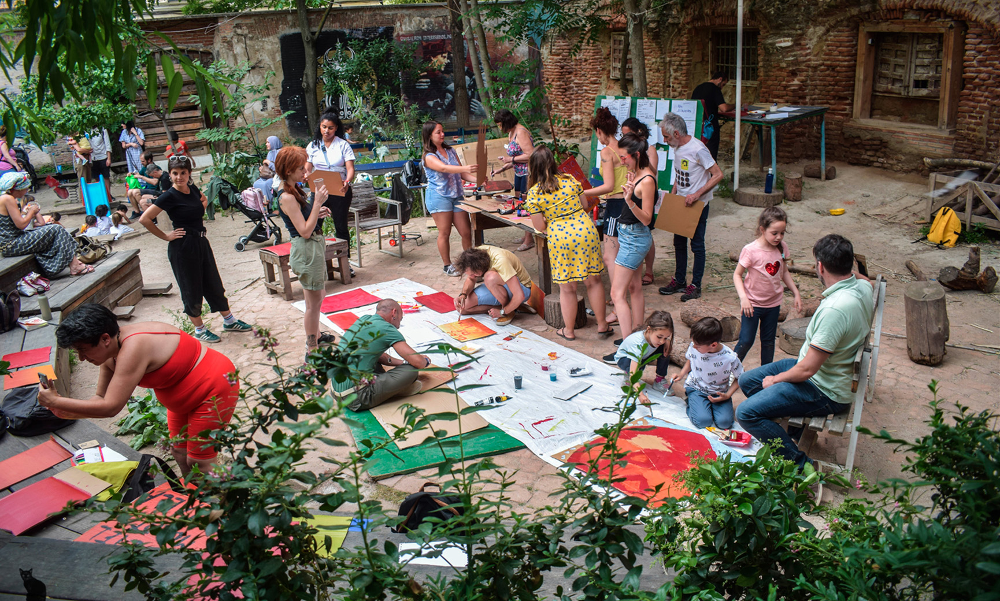
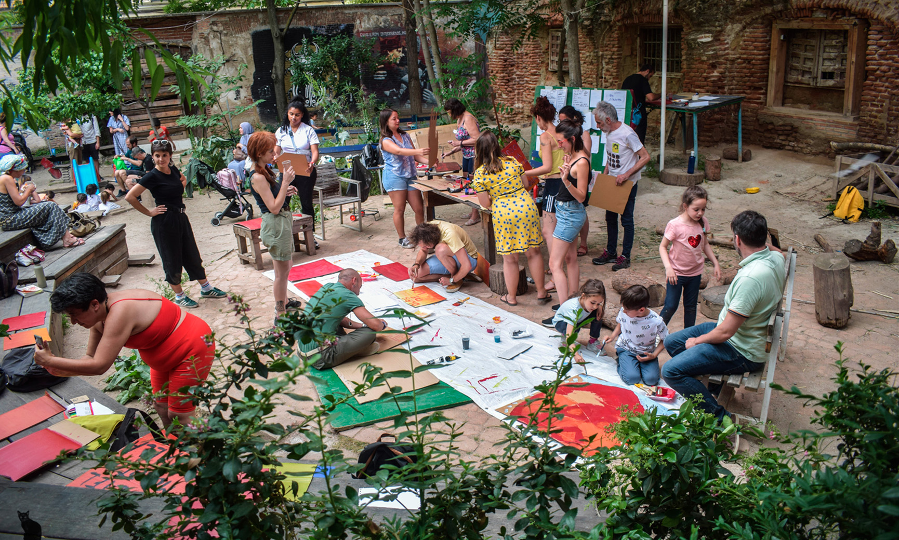

Qué: Museo Situado es una red de colaboración de colectivos y asociaciones del barrio de Lavapiés que lleva operando desde 2018, en el marco del entramado de relaciones y alianzas que el Museo Reina Sofía viene tejiendo desde hace quince años desde Museo en Red.
Museo Situado nace de la voluntad colectiva de conectar el Museo a su entorno inmediato, a su trama de conflictos y expectativas.
Partiendo del debate, la discusión y la organización colectiva, la asamblea promueve y desarrolla proyectos comunitarios en el barrio, apoya y visibiliza campañas de movilización respecto a las urgencias sociales que afectan dentro y fuera del mismo, y canaliza procesos de colaboración entre vecin+s, movimientos sociales, artistas y la institución. Más allá del uso de los recursos de la institución, l+s participantes de la asamblea defienden que la misión del museo debe pasar por ser vehículo de las aspiraciones y demandas de justicia social de la ciudadanía.
Quiénes: Sus integrantes provienen de colectivos sociales y activistas de Lavapiés, entre los que se cuentan las redes de lucha vecinal en defensa de los derechos de personas con trayectoria de vida migrante o el derecho a la vivienda, así como miembros de la escena artística independiente y vecin+s particulares, junto con personas que trabajan en el museo y sirven de puente entre la asamblea y la institución.
Una de las singularidades de Museo Situado es que está constituido por agentes ajen+s al sujeto privilegiado que acude a los museos como parte de sus hábitos sociales. Otra particularidad es que l+s agentes que forman la asamblea no adoptan la posición de receptor de las políticas de accesibilidad y de trabajo con la comunidad de las que están dotadas habitualmente las instituciones culturales. Más bien se constituyen como sujetos de acción y reflexión colectiva, que trabajan por hacer más porosos los límites y agujerear las barreras simbólicas de la institución pública.
Cómo: Museo Situado se gobierna y toma decisiones a través de una asamblea mensual. Los proyectos, actividades y acciones son propuestas por sus miembros y cuentan para su desarrollo de recursos gestionados de manera participativa. Entre ellos hay espacios de formación como la Escuela de derechos. Asesoramiento y apoyo legal para población migrante, la Escuela de español o Escuela de mediación situada; talleres de producción artística y activación de imaginación política como los Estallidos gráficos; encuentros de discusión sobre cuestiones de urgencia social bajo el título Voces Situadas, así como la celebración del Picnic de barrio, un evento anual que convoca festivamente al vecindario de Lavapiés. Los cuidados, entendidos desde una perspectiva política y feminista, son el principio ético y de funcionamiento de Museo Situado.
Participantes: Alianza por la Solidaridad, Banco de Alimentos del Barrio (BAB), Centro de Investigación y Creación Cultural La Tortuga, Cuidados Madrid Centro, Dragones de Lavapiés, Esta es una plaza, GRIGRI, Hola Vecinas, Lavapiés, ¿dónde vas?, Mbolo Moy Dole, Museo Reina Sofía, Observatorio en Derechos de Empleo del Hogar y Cuidados Jeanneth Beltrán, Planta Alta - Hablar en Arte, Postory - Universidad Autónoma de Madrid, Red Interlavapiés, Red Solidaria de Acogida (RSA), Sercade, Teatro del Barrio, Territorio Doméstico, Tómate algo, Valiente Bangla.


 
